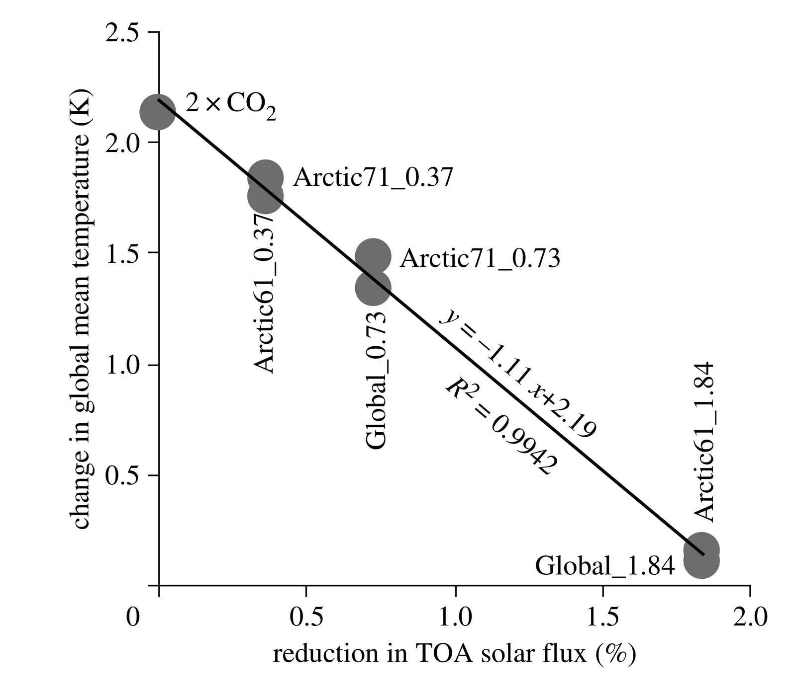

Global and Arctic climate engineering - numerical model studies
Key finding. Simulations of the atmosphere, sea ice, and upper ocean show that simple modulation of incoming sunlight is unlikely to perfectly reverse greenhouse warming, but that across a broad range of measures of both temperature and water, an engineered high-CO2 climate can be made much more similar to the low-CO2 climate than a high-CO2 climate would be without such engineering.

What question did this research address?
If a decision were ever made to engineer the climate, whoever built the hardware would need to know how the climate system responds to different kinds and patterns of forcing — not just whether global mean temperature can be held down.
Arctic-only intervention is an obvious candidate, since climate change is manifesting most strongly there. This paper asked what global and Arctic-only reductions in sunlight actually do to temperature and to the water cycle.
What did we find?
Both global and Arctic-only scenarios are simulated in idealized form, with insolation reduced above the top of the atmosphere rather than through any particular deployment technology.
The headline result is a comparison of imperfections. Sunlight reduction does not restore the pre-industrial climate exactly, but the residual differences are much smaller than the differences left by not intervening at all — and this holds for water-cycle measures, not only temperature.
Two opposing effects govern where the intervention is applied. At high latitudes there is less sunlight to deflect per unit of albedo change, but climate feedbacks operate more powerfully there.
Those two effects largely cancel, so the global mean temperature response per unit change in top-of-atmosphere albedo is relatively insensitive to the latitude at which the change is made.
On the engineering question the paper is direct: implementing insolation modulation appears to be feasible.
Why does it matter?
The latitude-insensitivity result is the one with practical consequences. If a unit of albedo change buys about the same global cooling wherever it is applied, then where to intervene becomes a question about regional effects, cost, and governance rather than about physical efficiency.
Testing water-cycle measures alongside temperature answers the standard objection that sunlight reduction and CO2 removal are not interchangeable. They are not — but the paper quantifies how far apart they are instead of leaving it qualitative.
Framing the problem as what a system builder would need to know, rather than whether geoengineering should be done, is characteristic of this group's approach to the subject.
Citation
Ken Caldeira and Lowell Wood (2008). Global and Arctic climate engineering - numerical model studies. Philosophical Transactions of the Royal Society A 366, 4039-4056.
Related
- Could reflecting sunlight substitute for reducing carbon dioxide?
- The science of geoengineering (Caldeira et al., 2013)
- Geoengineering Earth's radiation balance to mitigate CO2-induced climate change (Govindasamy and Caldeira, 2000)
- Geoengineering Earth's radiation balance to mitigate climate change from a quadrupling of CO2 (Govindasamy et al., 2003)
- Fast versus slow response in climate change: implications for the global hydrological cycle (Bala et al., 2010)